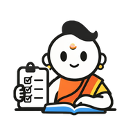

You’re offline
Reconnect to open your drawings and talk to Acharya. Keep any drawing already open in another window there until it saves.

Reconnect to open your drawings and talk to Acharya. Keep any drawing already open in another window there until it saves.